Loading
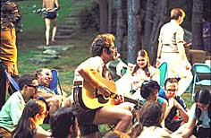
Bob Daley, Craig Franklin, Harold Webber, Peter Haber with guitar, Alice Mullen, Don & Celia MacLaren, Tom Casey; Multics Picnic, Aug 73. [THVV]
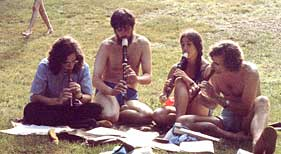
Bernie Greenberg, Noel & Debbie Morris, Charlie Clingen; recorder music at Multics Picnic, 1973. [THVV]
The first Multics Picnic was in July 1968. Steve Webber was a Harvard undergraduate who had a summer job in the system group. He proposed a Multics Picnic at his parents' house in Groton, Mass. The house has a big lawn sloping down to a lake, and a field next to the house, where we cooked burgers, played Frisbee and volleyball, and enjoyed the sun. I suppose 20 families came to the first picnic. It began around noon and lasted until dark.
We liked it so much that we repeated the event every summer afterward through 1980 (I think we missed one when Steve was away at graduate school). The formula didn't vary much: burgers and hot dogs and beer, swimming in the lake, sports for the athletic, music for the musical. People grew older, some went on to other jobs, children grew up. Former Multicians came. There were a few picnics when it poured rain, and one that had unseasonably cold weather for July, but I can't remember which year was which, or when Pat Phillipps launched his Amphicar, or which year Steve Herbst brought his electric keyboard. It was my favorite day of the year.
Steve Webber finally left the Multics group. The next summer, 1981, we had the Multics Picnic at a state park in Massachusetts, but it wasn't the same. That was my last picnic -- I moved to California -- and I am told that after 1981 the tradition ended.
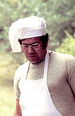
Nate Adleman cooking Nateburgers. [THVV]
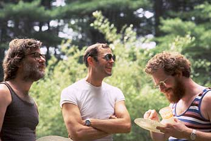
John Gintell, Jerry Whitmore, and Robert Coren at the 1978 picnic. [THVV]
Massachusetts Multics Picnics
Here are some additional Multics Picnic photos. (There is room for yours: send mail.)

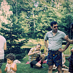
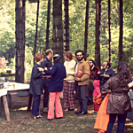
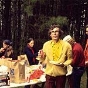
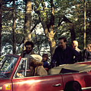
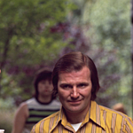
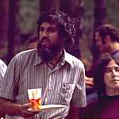
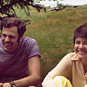
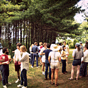
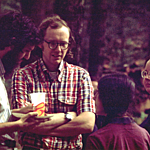
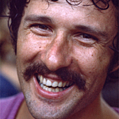
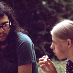

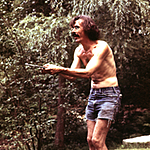
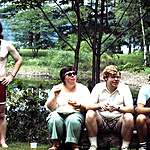
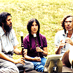
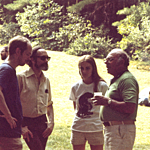
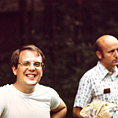
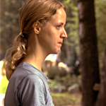
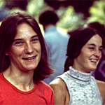
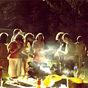
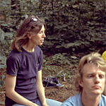
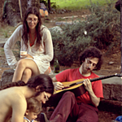
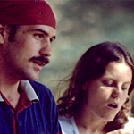
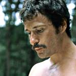
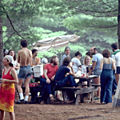


Phoenix Multics Picnics
Jim Lippard reminds me that PMDC had annual Multics Picnics in Phoenix throughout the 1980s, with some occasional participation by visiting CISLians and MIT folks. I remember a couple in the late 70s as well. Here is a picture by me from a 1979 picnic, and some snapshots from Julie Jackson (Sibert) from the 1981 picnic.


Updated 11/08/94
Updated 04/30/97
Updated 11/05/05
Updated 06/05/20